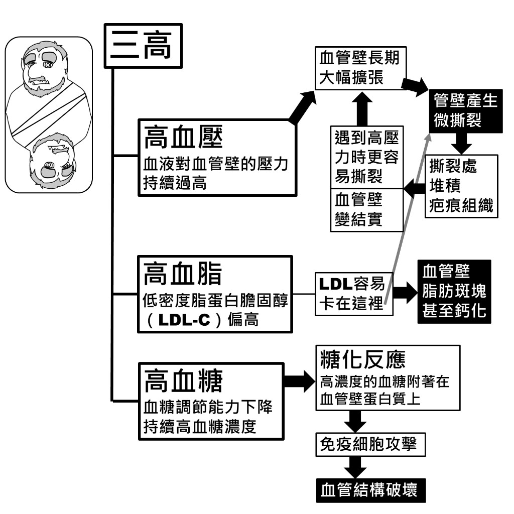
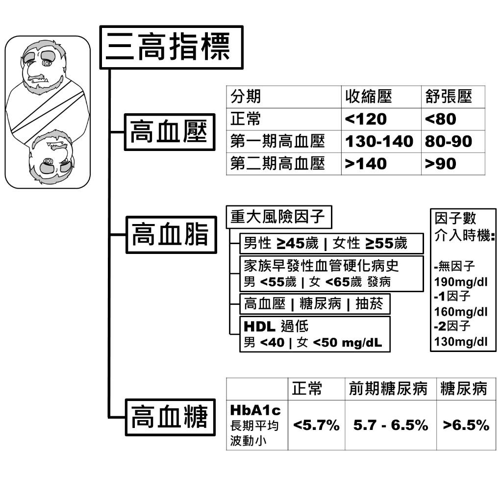
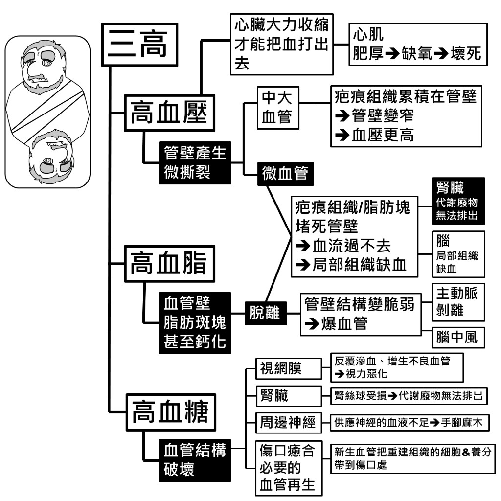
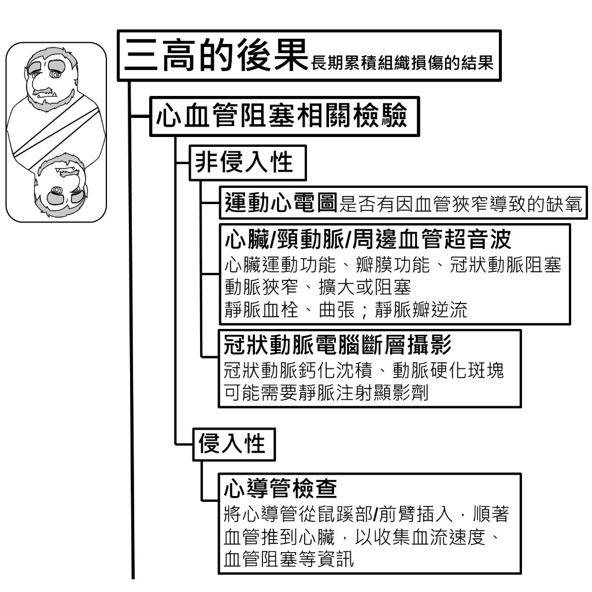
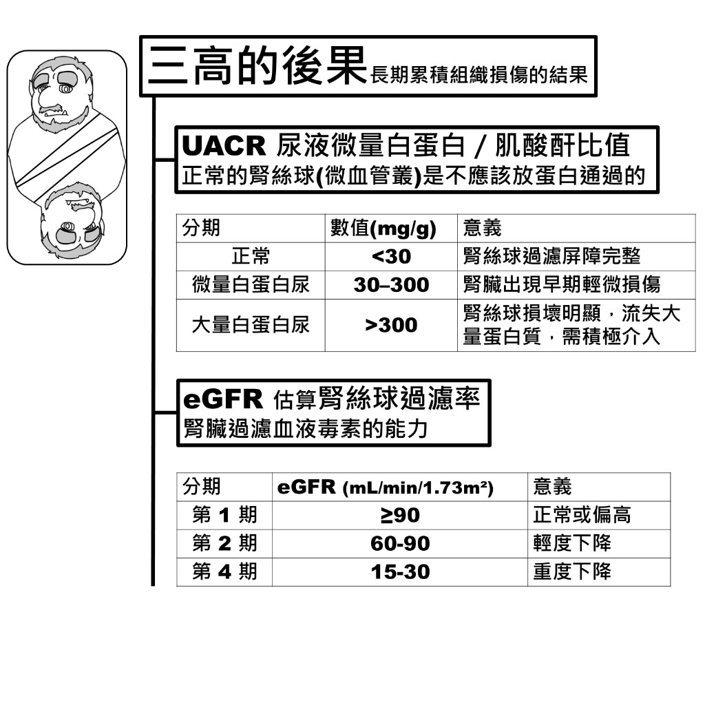
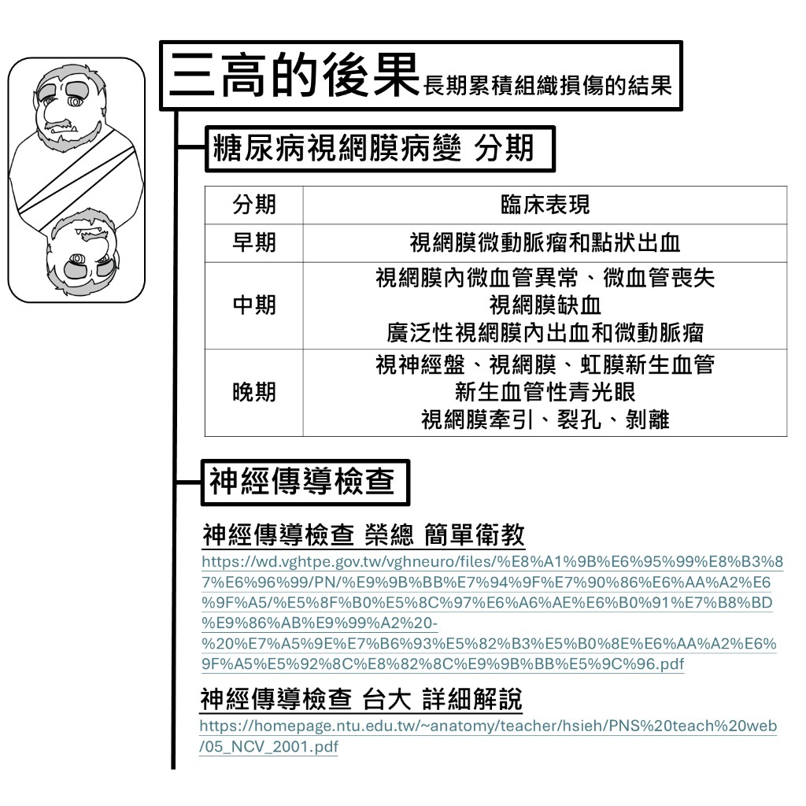

三高如何傷害血管
三高各自從不同路徑損害血管壁，且彼此會互相加重——例如高血壓造成的疤痕組織，會讓 LDL 更容易堆積。

高血壓
血液對血管壁的壓力持續過高 → 血管壁長期大幅擴張 → 管壁產生微撕裂 → 撕裂處堆積疤痕組織 → 遇到高壓力時更容易撕裂，血管壁變結實（惡性循環）。
高血脂
低密度脂蛋白膽固醇（LDL-C）偏高 → LDL 容易卡在管壁疤痕處 → 血管壁脂肪斑塊甚至鈣化。
高血糖
血糖調節能力下降、持續高血糖 → 糖化反應（高濃度血糖附著在血管壁蛋白質上）→ 免疫細胞攻擊 → 血管結構破壞。
三高指標
以下是判斷是否達到三高標準的常用參考值，實際診斷仍須由醫師綜合評估。

高血壓
| 分期 | 收縮壓 | 舒張壓 |
|---|---|---|
| 正常 | < 120 | < 80 |
| 第一期高血壓 | 130–140 | 80–90 |
| 第二期高血壓 | > 140 | > 90 |
高血脂
重大風險因子：
- 年齡：男性 ≥ 45 歲｜女性 ≥ 55 歲
- 家族早發性血管硬化病史（男 < 55 歲｜女 < 65 歲發病）
- 高血壓｜糖尿病｜抽菸
- HDL 過低：男 < 40｜女 < 50 mg/dL
因子數與介入時機（LDL-C）：
| 風險因子數 | 建議介入 LDL-C 門檻 |
|---|---|
| 無因子 | 190 mg/dL |
| 1 因子 | 160 mg/dL |
| 2 因子 | 130 mg/dL |
高血糖
| 指標 | 正常 | 前期糖尿病 | 糖尿病 |
|---|---|---|---|
| HbA1c（長期平均，波動小） | < 5.7% | 5.7–6.5% | > 6.5% |
三高的後果
長期累積的組織損傷，最終會影響心臟、大小血管、腎臟、腦、視網膜、周邊神經與傷口癒合能力。

高血壓的後果
- 心臟：心臟大力收縮才能把血打出去 → 心肌肥厚 → 缺氧 → 壞死
- 中大血管：管壁微撕裂 → 疤痕組織累積 → 管壁變窄 → 血壓更高
- 微血管：疤痕組織／脂肪塊堵死管壁 → 血流不通 → 局部組織缺血（腎臟代謝廢物無法排出、腦部局部缺血）
高血脂的後果
- 血管壁脂肪斑塊甚至鈣化 → 斑塊脫離 → 堵塞微血管或管壁結構變脆弱 → 爆血管
- 可能導致：主動脈剝離、腦中風
高血糖的後果
- 視網膜：反覆滲血、增生不良血管 → 視力惡化
- 腎臟：腎絲球受損 → 代謝廢物無法排出
- 周邊神經：供應神經的血液不足 → 手腳麻木
- 傷口癒合：血管再生受阻，重建組織的細胞與養分難以送達傷口
心血管阻塞相關檢驗
懷疑心血管阻塞時，可依侵入性由低到高安排以下檢查：

非侵入性
- 運動心電圖：檢查是否有因血管狹窄導致的缺氧
- 心臟／頸動脈／周邊血管超音波：評估心臟運動功能、瓣膜功能、冠狀動脈阻塞；動脈狹窄、擴大或阻塞；靜脈血栓、曲張及靜脈瓣逆流
- 冠狀動脈電腦斷層攝影（CCTA）：觀察冠狀動脈鈣化沈積、動脈硬化斑塊；可能需要靜脈注射顯影劑
侵入性
- 心導管檢查：將心導管從鼠蹊部或前臂插入，順著血管推到心臟，收集血流速度、血管阻塞等資訊
腎功能相關指標
三高長期損害微血管後，腎絲球過濾功能會逐漸下降。以下兩項是追蹤腎臟健康的重要指標。

UACR 尿液微量白蛋白／肌酸酐比值
正常的腎絲球（微血管叢）不應該讓蛋白質通過。UACR 升高代表腎絲球過濾屏障已受損。
| 分期 | 數值（mg/g） | 意義 |
|---|---|---|
| 正常 | < 30 | 腎絲球過濾屏障完整 |
| 微量白蛋白尿 | 30–300 | 腎臟出現早期輕微損傷 |
| 大量白蛋白尿 | > 300 | 腎絲球損壞明顯，流失大量蛋白質，需積極介入 |
eGFR 估算腎絲球過濾率
反映腎臟過濾血液毒素的能力。
| 分期 | eGFR（mL/min/1.73m²） | 意義 |
|---|---|---|
| 第 1 期 | ≥ 90 | 正常或偏高 |
| 第 2 期 | 60–90 | 輕度下降 |
| 第 4 期 | 15–30 | 重度下降 |
💡 原圖僅列出第 1、2、4 期。完整慢性腎臟病分期還包含第 3 期（30–60）與第 5 期（< 15，需透析），詳見 慢性腎臟病 頁面。
視網膜病變與神經傳導檢查
高血糖長期影響視網膜微血管，也會損害周邊神經的血液供應。以下為相關追蹤方式。

糖尿病視網膜病變分期
| 分期 | 臨床表現 |
|---|---|
| 早期 | 視網膜微動脈瘤和點狀出血 |
| 中期 | 視網膜內微血管異常、微血管喪失；視網膜缺血；廣泛性視網膜內出血和微動脈瘤 |
| 晚期 | 視神經盤、視網膜、虹膜新生血管；新生血管性青光眼；視網膜牽引、裂孔、剝離 |
神經傳導檢查
用於評估周邊神經是否因血液供應不足而受損（如手腳麻木）。可參考以下衛教資料：